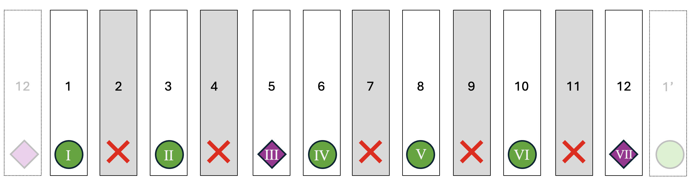
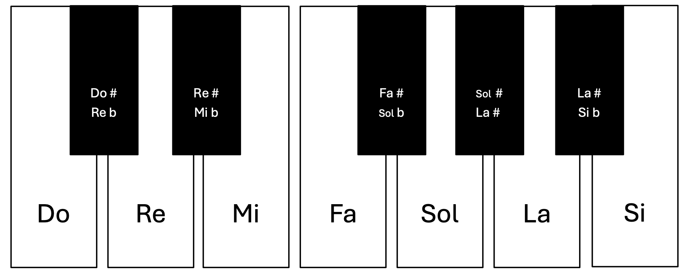
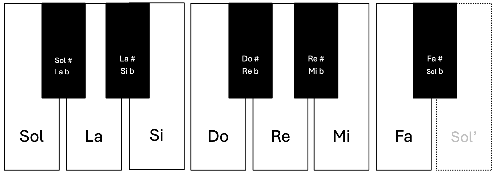
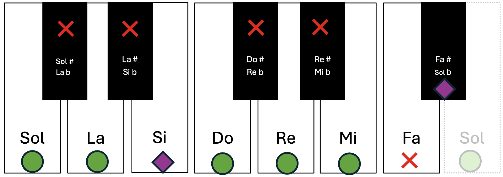

The major scale
A scale is an ordered sequence of musical notes arranged by pitch, following a specific pattern of intervals (distances between notes). One of the most important and most used scales in Western music is the major scale, which has seven notes and follows this pattern of intervals: T – T – ST- T – T – T – ST.
We will build it starting from note 1, which is called the tonic (I). Each note of the scale is identified using Roman numerals (I – II – III – IV – V – VI – VII).
In the diagram, when we see a circle, we move two notes forward; when we see a diamond we move one note.

As you can see, we only use the sounds: 1 – 3 – 5 – 6 – 8 -10 y 12. The rest of the notes are marked with a darker colour and an X, because they are not part of the scale. In fact, let’s colour them in black and let’s make them smaller and thinner.

When we put these notes together, we obtain a piano keyboard, where the white keys correspond to the notes of the major scale. The piano was built this way because the major scale was the most commonly used scale. These seven notes are the same ones we saw at the beginning. The intermediate notes (the black keys) are named using accidentals: a sharp (#) raises the note by one semitone, a flat (b) lowers the note by one semitone, the natural (♮) cancels a sharp or flat

We can now name this scale the do (C) major scale:
- Do: the tonic is do.
- Mayor: the distances between the notes follow the pattern T – T – ST- T – T – T – ST.
This means that to build any scale, we only need two elements: the tonic and the interval pattern.
Now let’s create the sol (G) major scale. We place the notes starting from the tonic

Then we apply the major scale pattern:

As we can see, in the sol (G) major scale there is one altered note: we do not use fa (F) natural, but fa♯.